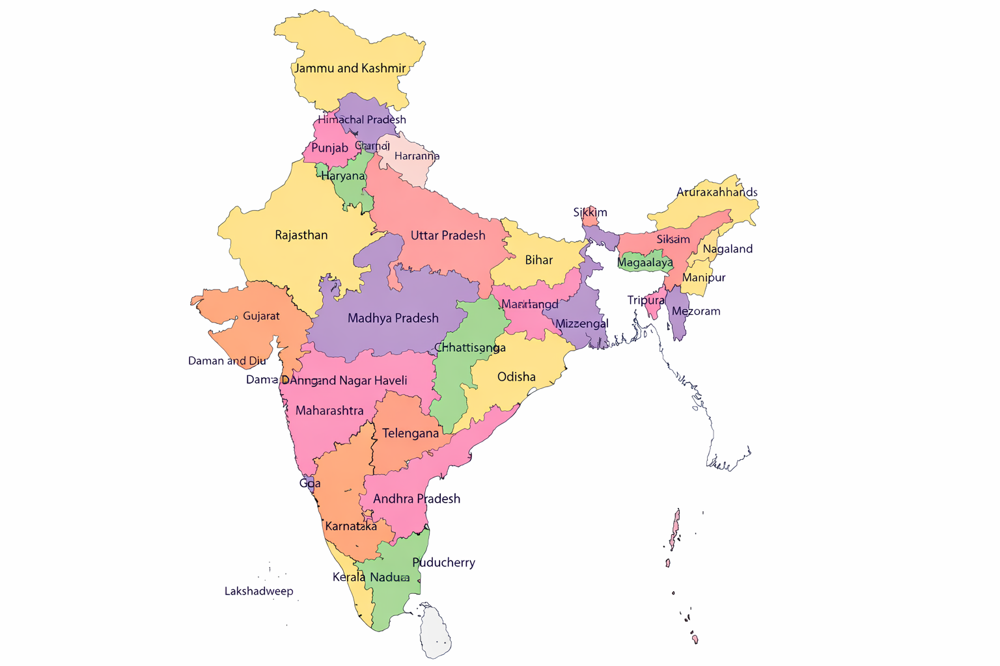

Indian Culture
Indian culture is one of the oldest and richest cultures in the world. It includes diverse traditions, languages, festivals, music, dance, art, and customs that reflect unity in diversity.
Famous Indian festivals , Forts & Heritage
Diwali: The Festival of Lights
Diwali (or Deepavali) is the most significant festival in Hinduism, symbolizing the victory of light over darkness and good over evil.
Ganesh Chaturthi
Ganesh Chaturthi is a popular Hindu festival that celebrates the birth of Lord Ganesha, the god of wisdom, prosperity, and good fortune. It is usually celebrated for 10 days, mainly in India, especially in Maharashtra.
Barsana Holi
Barsana Holi is a famous and unique Holi celebration held in Barsana, Uttar Pradesh, the birthplace of Radha Rani. It is popularly known as Lathmar Holi.

Vijaya Dashami
Vijaya Dashami, also known as Dussehra, is an important Hindu festival that symbolizes the victory of good over evil. It marks Lord Rama’s victory over Ravana and also celebrates Goddess Durga’s triumph over Mahishasura.

Shivneri Fort
Shivneri Fort is a historic hill fort in Maharashtra. It is world-famous as the birthplace of Chhatrapati Shivaji Maharaj.
Lohagad Fort
Lohagad Fort is a famous hill fort in Maharashtra, known for its strong structure and scenic beauty, especially during the monsoon season.

Torna Fort
Torna Fort, also known as Prachandagad, is one of the most important and historic hill forts in Maharashtra. It was the first fort captured by Chhatrapati Shivaji Maharaj.

Chittorgarh Fort
Chittorgarh Fort is one of the largest forts in India and a symbol of Rajput bravery and sacrifice. It is a UNESCO World Heritage Site.

Ellora Caves
Ellora Caves are a famous group of rock-cut caves located near Chhatrapati Sambhajinagar in Maharashtra. They are a UNESCO World Heritage Site.
Chhatrapati Shivaji Maharaj Terminus
CSMT is a historic railway station in Mumbai, built in 1887, famous for Victorian Gothic architecture blended with Indian styles.

Vittala Temple
Vittala Temple in Hampi is dedicated to Lord Vittala and is renowned for its unique architecture.
The Mountain Railways
The Mountain Railways of India are historic railways famous for scenery, steam engines, tunnels, loops, and bridges.
Indian History & Geography
India has a long and glorious history from the Indus Valley Civilization to the Vedic age, Maurya and Gupta empires, and the struggle for independence. Geography has played a major role in shaping India’s culture, kingdoms, and unity in diversity.
Political Map of India showing all States and Union Territories
- 28 States and 8 Union Territories of India
- North, South, East, West & North-East regions
- Political boundaries of modern India
- Mainland and island regions of the country